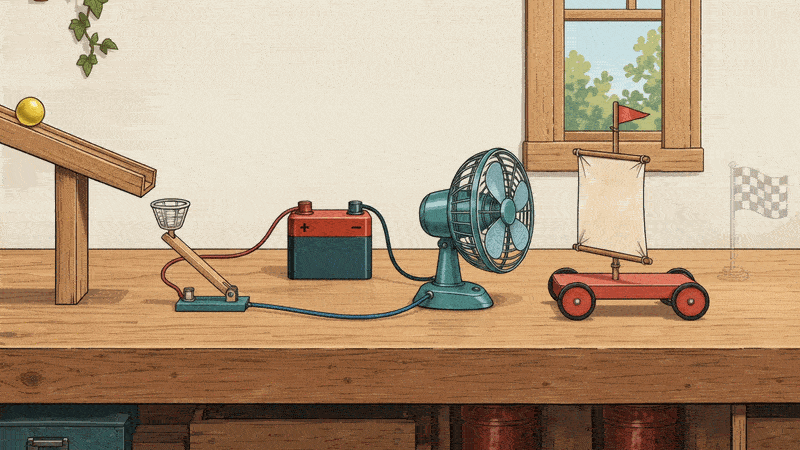

UNIT 4 · LESSON 4 · ENERGY TRANSITIONS
Watch and Trace Energy
Watch the two GIFs and answer three questions. Identify the energy store, the change in form, and the object receiving energy.

Ready. Select Play GIF to start.
Read the action instead
All three questions explored. Apply the same energy tracking to one stage of your own device.